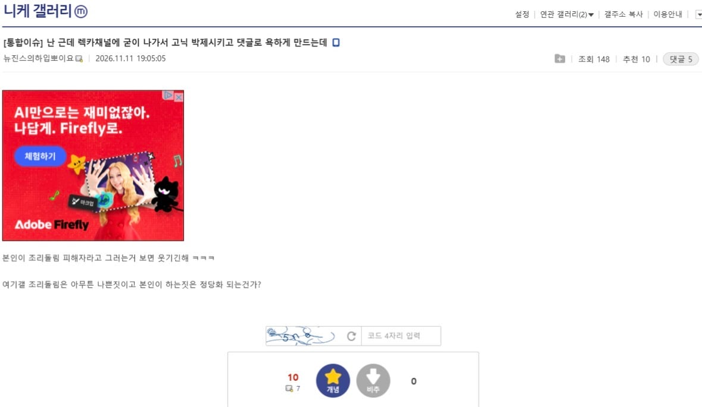
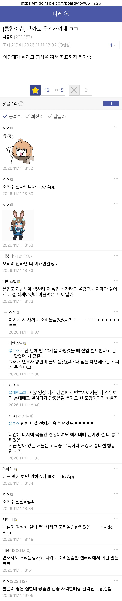
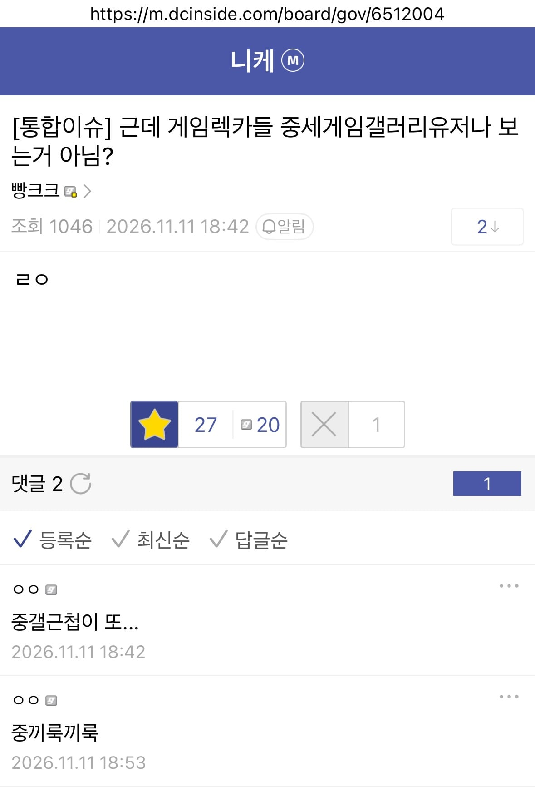

"왜 우리 니케갤 박제하냐"

"사악한 김성회의 악의적 좌표찍기"

"최초제보자는 중갤근첩"
니케갤이 화가 많이 났나봄...

"왜 우리 니케갤 박제하냐"

"사악한 김성회의 악의적 좌표찍기"

"최초제보자는 중갤근첩"
니케갤이 화가 많이 났나봄...
남 욕할 놈들이 아니었구만 그래 ㅋㅋㅋ
씹덕겜 많이 했었는데 유독 니케 갤챈 상태가 이상한거같음.
겜정보를 갤챈에서 얻는편인데 니케는 갤챈 둘다 좆같아서 그냥 니케를 접음
뜌땨 거리는 분위기 좋은 챈하다 니챈 처음 가면 좀 무서움 ㅋㅋ
관리하는 파딱 주딱 꼬라지가 안좋으면 그렇게 됨
관리자가 여론조성용 알바니까 그렇지 ㅋㅋㅋ
이거 보고 싱글벙글 니케갤 구경갔는데 천안문 때렸는지 조리돌림 피해자 욕하는 글은 안남아있고 온갖 곳에서 침공와서 개판됐더라
마갤 아닌 승니갤 간거 아님?ㅋㅋ거긴 니케 나올때부터 그랬음
ㄴㄴ 니케갤 맞음 가서 렉카 검색해보셈
ㅋㅋ 굳이 ㅋㅋ
와 갤에 소속감을 가지는구나
디씨갤은 갤질하는 애들이 본인갤 패는게 놀이인데
갤박제 조리돌림으로 화가 난다고?
신기하네
와 진짜 저능아새끼들이다 장난아니네. 마이너갤들이 다 이렇긴해. 잉클링 모던워페워갤등등 특히 겜갤들이 정신나간 애들이 엄청 많아. 이런 애들이 사회에 있다고 생각하면 소름돋음
승니갤 2중대
쟤네도 결국 승니갤 종자들이라 ㅋ
병신들
진짜 개병신 찐따새끼들만 모아놨나 신기할정도네
중갤근첩 이란 말이 ㅈㄴ 폭력적이네 ㅋㅋㅋ 중갤도 같은 디시잖아 ㅋㅋㅋㅋㅋㅋ
심지어 지들보다 먼저 살던사람들 ㅋㅋㅋㅋ
ㄹㅇ ㅋㅋㅋㅋ 게임으로는 훨씬 근본인데 ㅋㅋ
얼마나 제발 저리면 ㅋㅋㅋㅋㅋ
니평
동조하지 않는 99.9999% 이용자들은 그냥 입닥치고 있으니
0.0001% 이용자 몇명이 씹소리를 해대면 그게 여론이 된다구
메이플때랑 다를게 없네